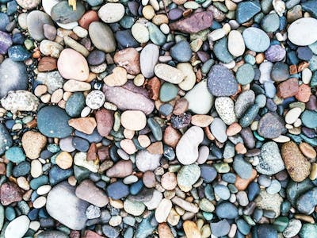
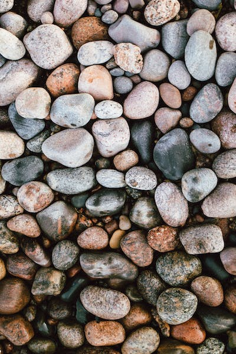

: The Home Gardeners Guide To Decorative Stone :

Decorative stone can be a wonderful addition to any garden, providing both aesthetic appeal and practical benefits. Whether you're looking to create a stunning pathway or add texture to a flower bed, decorative stone offers a range of options to suit your needs. In this comprehensive guide, we will explore the different types of decorative stone, the benefits they offer, and how to properly incorporate them into your garden design. So, let's dive in and discover the beauty of decorative stone!
Types of Decorative Stone :
-

- Gravel:
- Crushed Stone:
- River Rock:
- Cobbles:
Gravel is a popular choice for garden pathways and driveways due to its versatility and affordability. It comes in various sizes and colors, allowing you to create different effects depending on your preferences. Smaller gravel, such as pea gravel, is ideal for creating a smooth surface, while larger gravel can add texture and visual interest.

Crushed stone is another common type of decorative stone that is widely used in landscaping projects. It is made by crushing larger stones into smaller pieces and can be found in different sizes and colors. Crushed stone is often used as a base material for patios, walkways, and retaining walls.

River rock is known for its smooth, rounded edges, which give it a natural and organic look. It is often used in water features, such as ponds and streams, as well as for bordering flower beds. River rock comes in various sizes and colors, allowing you to create a unique and visually appealing landscape.

Cobbles are larger stones that can create a bold and dramatic effect in your garden. They are commonly used to define areas, such as driveways or garden borders. Cobbles come in different shapes, sizes, and colors, providing endless possibilities for creating a unique and eye-catching design.
Benefits of Decorative Stone :
Decorative stone offers several benefits that make it a popular choice among gardeners. Let's explore some of these benefits:
- Weed Control:
- Moisture Retention:
- Erosion Control:
- Aesthetic Appeal:
One of the main advantages of using decorative stone in your garden is its ability to suppress weed growth. When properly installed with a weed control membrane, decorative stone creates a barrier that prevents sunlight from reaching weed seeds, inhibiting their germination. This means less time spent weeding and more time enjoying your garden.
Decorative stone can help retain moisture in the soil by acting as a protective layer. It reduces evaporation, keeping the soil moist for longer periods. This is particularly beneficial during dry spells or in areas with limited water availability. Additionally, the stone acts as a thermal barrier, preventing extreme temperature fluctuations that can stress plants.
If your garden is on a slope or prone to erosion, decorative stone can help stabilize the soil. Its weight and texture make it less susceptible to being washed away by rainwater or wind. By creating a solid surface, it helps prevent soil erosion and protects the underlying landscape.
Perhaps the most obvious benefit of decorative stone is its visual appeal. It adds texture, color, and contrast to your garden, creating a visually stunning landscape. Whether you prefer a modern, minimalist design or a more rustic and natural look, decorative stone can be used to achieve the desired effect.
Planning and Preparation :
Before you start incorporating decorative stone into your garden, proper planning and preparation are essential. Here are some key steps to consider:
- Assess Your Garden:
- Measure and Calculate:
- Choose the Right Stone:
- Prepare the Ground:
Take a close look at your garden and identify areas where decorative stone could enhance the overall design. Consider factors such as existing plants, sunlight exposure, drainage, and the overall style you want to achieve. This will help you determine the type and quantity of decorative stone required.
Measure the dimensions of the areas where you plan to install the decorative stone. Calculate the square footage to determine the amount of stone needed. Keep in mind that different types of stone have varying coverage rates, so consult the supplier or check the packaging for specific guidelines.
Select the type of decorative stone that best suits your garden design and functional needs. Consider factors such as color, size, shape, and texture. Take into account the existing elements in your garden, such as plants, trees, and structures, to ensure a harmonious and cohesive look.
Clear the area of any existing vegetation, rocks, or debris. Level the ground and remove any weeds or grass. If necessary, use a weed control membrane to further prevent weed growth. Ensure that the membrane is laid at an appropriate depth based on the size of the decorative stone you are using.

Installation Techniques :
Once you have completed the planning and preparation stages, it's time to install the decorative stone in your garden. Here are some techniques to consider:
- Single Layer:
- Multiple Layers:
- Edging and Borders:
For smaller areas or pathways, a single layer of decorative stone may be sufficient. Spread the stone evenly over the prepared ground, ensuring a consistent thickness. Use a rake or shovel to distribute the stone and create an even surface. Avoid piling the stone too high, as it may become unstable and prone to movement.
In larger areas or high-traffic areas, multiple layers of decorative stone may be necessary for stability and longevity. Start by applying a base layer of larger stones or crushed stone to create a solid foundation. This will help with drainage and prevent sinking or shifting of the upper layers. Add additional layers of smaller decorative stone, gradually decreasing the size as you move upward.
To create defined borders or edges, consider using cobbles or larger stones. Place them strategically along the perimeter of the area, securing them in place with mortar or landscape adhesive. This will prevent the decorative stone from spilling over into surrounding areas and provide a clean and finished look.
Maintenance and Care :
To ensure the longevity and beauty of your decorative stone, regular maintenance is required. Here are some tips to keep in mind:
- Weed Control:
- Cleaning:
- Replenish and Replace:
While decorative stone helps suppress weed growth, some weeds may still find their way through. Regularly inspect your garden and remove any weeds that appear. This will prevent them from taking root and spreading throughout the area. Use a hand weeder or garden hoe to carefully remove the weeds, taking care not to disturb the underlying stone.
Over time, decorative stone may accumulate dirt, debris, or organic matter. To keep it looking fresh and vibrant, periodic cleaning is necessary. Use a garden hose or pressure washer to gently rinse off any dirt or stains. Avoid using harsh chemicals, as they may damage the stone or surrounding plants. For stubborn stains, scrub with a brush and mild detergent.
As decorative stone ages, it may become dislodged or wear down. Periodically check for any areas that require replenishment or replacement. Add additional stone as needed to maintain an even and consistent appearance. If any stone becomes damaged or cracked, remove and replace it to preserve the integrity of the design.